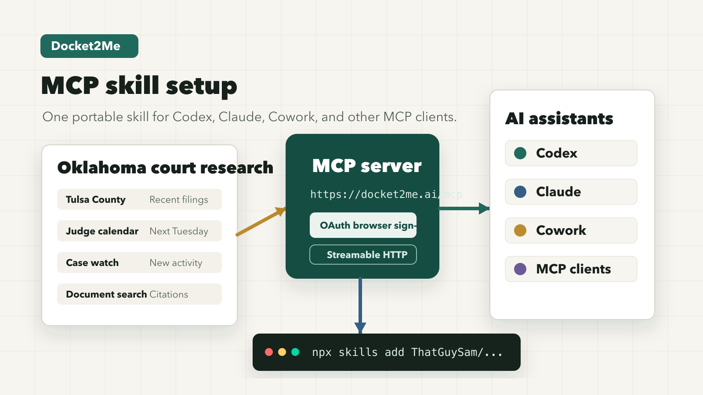

Client-specific setup
Codex config, Claude connector steps, Claude Code CLI commands, Cowork remote HTTP setup, and generic MCP settings.
Installable agent skill
A small, auditable skill that teaches an AI assistant how to configure Docket2Me's remote MCP server, launch OAuth sign-in, and verify the connection without handling passwords or tokens.

What it handles
Codex config, Claude connector steps, Claude Code CLI commands, Cowork remote HTTP setup, and generic MCP settings.
Keeps access in the normal browser sign-in path and tells agents not to inspect or print credentials.
Prompts the assistant to confirm the server appears, OAuth completes, and Docket2Me answers a low-risk query with source links.
Install
Docket2Me access is member or beta gated. This skill only installs the setup workflow; the MCP server still requires normal Docket2Me sign-in.
npx skills add ThatGuySam/docket2me-mcp-skill@docket2me-mcp -g -a codex -ynpx skills add ThatGuySam/docket2me-mcp-skill@docket2me-mcp -g -a claude-code -yInstall the Docket2Me MCP skill from https://github.com/ThatGuySam/docket2me-mcp-skill.
Review docket2me-mcp/SKILL.md and referenced scripts first.
Install the docket2me-mcp folder into ~/.agents/skills/docket2me-mcp for cross-agent discovery, or ~/.codex/skills/docket2me-mcp if this Codex install only reads tool-specific skills.
Do not inspect or print secrets.
After installing, use $docket2me-mcp to configure Codex for Docket2Me and leave OAuth sign-in to the normal browser flow.Install the Docket2Me MCP skill from https://github.com/ThatGuySam/docket2me-mcp-skill.
Review docket2me-mcp/SKILL.md and referenced scripts first.
Install the docket2me-mcp folder into ~/.agents/skills/docket2me-mcp for cross-agent discovery, or ~/.claude/skills/docket2me-mcp if this Claude install only reads tool-specific skills.
Do not inspect or print secrets.
After installing, use the skill to connect Docket2Me in Claude Desktop, Claude Code, Cowork, or another MCP client.Endpoint
https://docket2me.ai/mcp